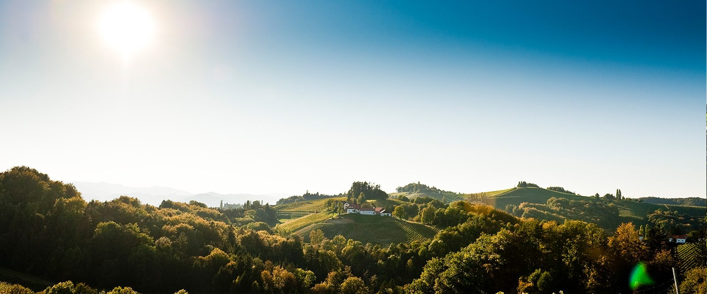

Fleisch & Wurst
- Steirisches Schweinefrischfleisch und Presswurst: Woaka-Hof, Familie Posch in Heimschuh
- Steirisches Qualitätsrindfleisch: Fleischerei Pinnitsch in Leutschach
- Hauswürstl: Galloway Hof Oberseit’n in Wagrain, Salzburg
Willkommen in unserem ausgezeichneten Buschenschank, einem Ort voller Geschichte und Genuss. Die jahrhundertealten Holzbalken, das handgesetzte Ziegelgewölbe und die alten Steine unseres rund 360 Jahre alten Winzerhauses schaffen eine Atmosphäre, die zum Verweilen einlädt.

Unser liebevoll renoviertes Kleinod unweit der Südsteirischen Weinstraße begeistert mit einer sonnigen, südseitigen Terrasse. Hier können Sie die Ruhe und Natursschönheit der Südsteiermark in vollen Zügen genießen. Für besondere Momente stehen gemütliche Liegestühle bereit – der perfekte Platz, um bei einem Glas Wein die Seele baumeln zu lassen.
Auch unsere kleinen Gäste kommen nicht zu kurz: Ein großzügiger Spielplatz lädt zum Toben und Entdecken ein, dazu gibt es frische Obstsäfte und eigene Kinderportionen.
Betriebsurlaub: 20. bis 23. Juli 2026 (Montag bis Mittwoch). Ab Freitag, 25. Juli, wieder wie gewohnt geöffnet.
Unser Buschenschank steht für ehrlichen, handwerklich hergestellten Genuss. Alle Jausenspezialitäten werden mit viel Sorgfalt selbst produziert:
Die Veredelung – beizen, selchen, lufttrocknen, kochen, braten – machen wir nach alter Tradition zu 100 % selbst am Hof.
Von über 800 Weinbaubetrieben mit Buschenschank in der Steiermark dürfen nur 71 Betriebe dieses Qualitätssiegel tragen – eine Auszeichnung für exzellente Weine, authentische Kulinarik und herzliche Gastfreundschaft.
Jeder Wein in perfekter Temperatur, stilvoll serviert im passenden Glas für höchsten Genuss.
Eine Vielfalt an steirischen Köstlichkeiten, von herzhaft bis leicht und modern – aus dem eigenen Betrieb oder der unmittelbaren Nachbarschaft.
Gemütlichkeit, Charme und das echte südsteirische Lebensgefühl – dort, wo der Wein gewachsen ist.
Goldregen für unsere Fleischspezialitäten: Wir haben vier Produkte eingereicht und dürfen uns über vier Auszeichnungen der Landwirtschaftskammer Steiermark freuen.
Speck, Kübelfleisch und Schinken finden Sie auf unserer Steirischen Brettljause, das zarte Lendbratl gibt es für unsere Hausgäste zum Frühstück. Fotocredit der Prämierungsfotos: LK Steiermark, Franz Suppan und LK Steiermark, Stefan Kristoferitsch.

Von unserer Terrasse genießen Sie einen Blick auf die einzigartigen Kulturlandschaften der Region – sanfte Weingärten, dichte Wälder und blühende Wiesen verschmelzen zu einem harmonischen Mosaik der Natur.
Als stolzer Partnerbetrieb des Naturparks Südsteiermark verstehen wir uns als Botschafter dieser Landschaft. Unsere Naturpark-Jause ist ein Geschmackserlebnis, das die Vielfalt vor unserer Haustür widerspiegelt: Hausgemachte Fleischspezialitäten und feine Aufstriche werden mit frischen Wild- und Gartenkräutern verfeinert. Giersch, Gänseblümchen, Vogelmiere und Gundelrebe – oft übersehen, doch voller Geschmack – finden bei uns ihren verdienten Platz auf dem Teller.
Wir sind Naturpark-Partner-Betrieb des Jahres 2016. Weitere Informationen gibt es unter naturpark-suedsteiermark.at, die Naturpark-Juwele unter naturpark-suedsteiermark.at/naturpark-juwele. Im Naturpark gibt es zudem ein buchbares Erlebnisprogramm mit sechs Erlebnistouren, die vorab bei den einzelnen Betrieben gebucht werden.
Die Auswahl unserer Lieferanten, die hohe Qualität der Produkte, das Tierwohl, die regionale Verbundenheit und die kurzen Transportwege sind uns eine Herzensangelegenheit.
Alle Weine, der Traubensaft, der Balsamessig und der Muskateller-Tresterbrand stammen aus Eigenerzeugung.
Hinein in die Natur, die traumhafte Aussicht auf die südsteirische Hügellandschaft inhalieren, die selbstgemachte Jause genießen, dazu ein gutes Glaserl Wein!
Holen Sie sich einen herrlich gefüllten Picknick-Korb für ein unvergessliches Picknick im Weingarten – einfach vorbestellen und abholen. Eine Decke und den Tipp für’s schönste Platzerl gibt’s natürlich auch dazu.
Wir bitten um Vorbestellung mindestens 2 Stunden vor der gewünschten Abholung. Zu unseren Öffnungszeiten möglich.
Ein Anruf genügt – oder Sie schicken uns die Anfrage hier, auch außerhalb der Öffnungszeiten.
Größere Runden, Firmenausflüge und Familienfeiern planen wir gerne gemeinsam. Sagen Sie uns, worauf Sie Lust haben: Brettljause, Naturparkjause, gemischte Platten oder marinierte Vorspeisen.
Telefonisch: +43 3454 303 oder +43 699 132 00 991